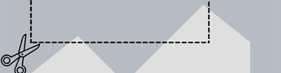

Solução
A Equipe DAC, ao receber o desafio da JOVI, realizou uma pesquisa com 40 estudantes e identificou que uma das principais dificuldades no uso do celular para estudos é a desorganização da galeria, causada pela falta de tempo ou motivação. Para solucionar esse problema, a equipe desenvolveu o Camssify, uma ferramenta voltada à organização dos conteúdos de estudo, com as seguintes funções:
Tutorial inicial
Ao abrir a função pela primeira vez, o sistema irá apresentar um tutorial de todas as funções do modo estudo da câmera, para que o usuário não fique perdido.
Recorte de fotos
Assim que uma foto for tirada, o usuário terá a possibilidade de cortá-la instanâneamente, sem a necessidade de abrir a galeria para realizar a função.

Melhor legibilidade de texto
Ao tirar fotos de matérias escritas em notas, quadros, documentos ou livros, o sistema aumenta o contraste delas, facilitando a leitura do texto escrito.

Atribuição de tags às fotos
O sistema adiciona um prefixo ao nome das fotos, que define a matéria contida nela. Esse prefixo é uma tag sugerida pelo sistema, através do reconhecimento de texto da imagem, ou criada manualmente pelo usuário.

Organização automática da galeria
O sistema utilizará das tags atribuídas às fotos para criar pastas de mesmo nome e organizar as fotos na galeria, por matéria.

Organização automática da galeria
O sistema utilizará as fotos enviadas pelo usuário e as processará por meio de inteligência artificial para identificar os conteúdos presentes nelas e gerar um plano de estudos personalizado com base nas matérias e nos assuntos identificados.